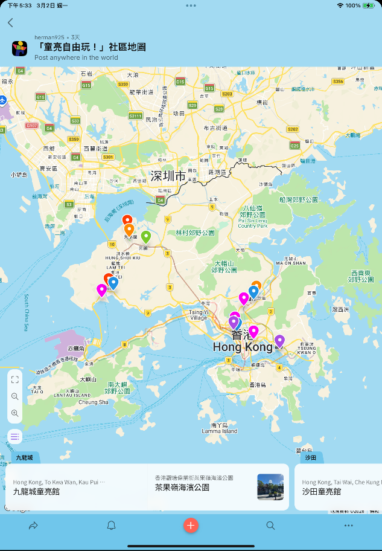
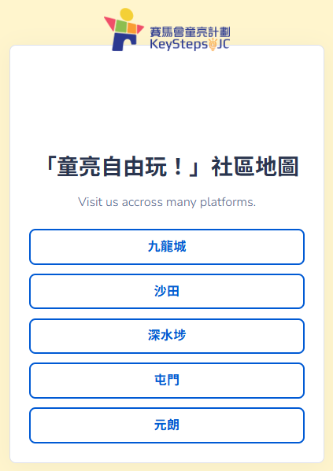
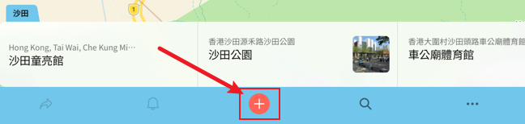
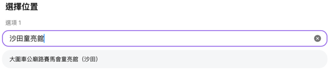
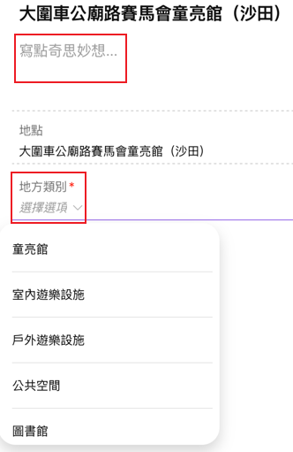
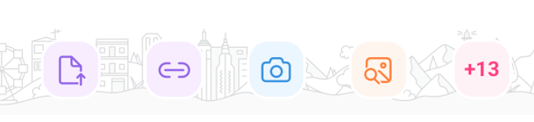

Padlet 使用指南
裝置需連接至網際網路，請先打開相機，再掃描二維碼或使用提供網址進入「童亮自由玩！」社區地圖。






| 地點 | 地區 | 類別 | 推薦原因重點 |
|---|---|---|---|
| 元朗公園 (大橋路) | 元朗 | 戶外 | 廣闊無圍欄草坪讓孩子自訂規則，噴泉廣場引發自發性水玩。 |
| 天水圍公園 (天瑞路) | 元朗 | 戶外 | 迷宮／洞穴引發探索欲，香味植物刺激感官好奇心。 |
| 兆麟體育館兒童遊戲室 | 屯門 | 室內 | 攀石牆讓孩子自己決定爬多高，室內不受天氣干擾。 |
| 屯門公園共融遊樂場 | 屯門 | 戶外 | 無固定玩法水沙設計；傷健兒童自然同場互動。 |
| 深水埗公園兒童遊樂場 | 深水埗 | 戶外 | 高滑梯讓孩子自主評估風險、克服恐懼。 |
| 北河街體育館兒童遊戲室 | 深水埗 | 室內 | 安靜環境讓孩子深度投入，適合需要低刺激環境的孩子。 |
| 車公廟體育館兒童遊戲室 | 沙田 | 室內 | 孩子自主選擇活動；平台花園提供半戶外靜態遊玩空間。 |
| 沙田公園 (源禾路) | 沙田 | 戶外 | 石山、城堡、迷宮是沒有劇本的空間，孩子自然發展角色扮演。 |
| 茶果嶺海濱公園 (偉業街) | 觀塘 | 戶外 | 樹屋繩網讓孩子面對高度、測試膽量。 |
| 地點 | 地區 | 類別 | 推薦原因重點 |
|---|---|---|---|
| 元朗公園 (大橋路) | 元朗 | 戶外 | 廣闊無圍欄草坪讓孩子自訂規則，噴泉廣場引發自發性水玩 |
| 天水圍公園 (天瑞路) | 元朗 | 戶外 | 迷宮／洞穴引發探索欲，香味植物刺激感官好奇心 |
| 兆麟體育館兒童遊戲室 | 屯門 | 室內 | 攀石牆讓孩子自己決定爬多高，室內不受天氣干擾 |
| 屯門公園共融遊樂場 | 屯門 | 戶外 | 無固定玩法水沙設計；傷健兒童自然同場互動 |
| 深水埗公園兒童遊樂場 | 深水埗 | 戶外 | 高滑梯讓孩子自主評估風險、克服恐懼 |
| 北河街體育館兒童遊戲室 | 深水埗 | 室內 | 安靜環境讓孩子深度投入，適合需要低刺激環境的孩子 |
| 車公廟體育館兒童遊戲室 | 沙田 | 室內 | 孩子自主選擇活動；平台花園提供半戶外靜態遊玩空間 |
| 沙田公園 (源禾路) | 沙田 | 戶外 | 石山、城堡、迷宮是沒有劇本的空間，孩子自然發展角色扮演 |
| 茶果嶺海濱公園 (偉業街) | 觀塘 | 戶外 | 樹屋繩網讓孩子面對高度、測試膽量 |